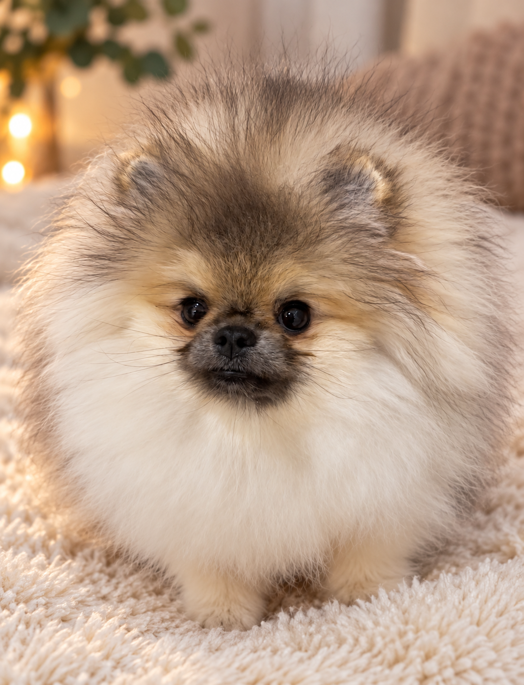

TINY MAJESTY
Naše odchovy
Příběhy, které pokračují dál.
NAŠE ODCHOVY
Každé štěňátko má svůj vlastní příběh.
Každý náš vrh je začátkem nové kapitoly. Některá štěňátka zůstávají doma a stávají se součástí další generace Tiny Majesty. Jiná odcházejí do pečlivě vybraných rodin, kde začínají psát svůj vlastní příběh.
Na této stránce budeme postupně představovat naše odchovy a sledovat jejich cestu i poté, co opustí náš domov.
VRH B · 2026
Bellatrix
Aktuální odchov


VRH B
Bellatrix
Bellatrix se narodila 22. 7. 2026 jako jedináček z vrhu B po Minnie a Toto Buin.
Je to hravá a akční fenečka, která má ráda společnost lidí i ostatních psů. Už teď je z ní malá osobnost, která si dokáže podmanit celou naši smečku. Je zvědavá, veselá a ráda se zapojuje do všeho, co se kolem ní děje.
Každý den nás baví sledovat, jak roste, objevuje svět a postupně se z ní stává sebevědomá malá holčička. 🤍
Bellatrix je volná k rezervaci.
Do nového domova bude moci odejít po dokončení očkování, nejdříve na konci listopadu 2026. Do té doby bude vyrůstat u nás, v domácím prostředí, obklopená naší rodinou a smečkou.
Pokud vás Bellatrix zaujala a chtěli byste se o ní dozvědět více, budeme rádi, když se nám ozvete.
Příběh vrhu B →VRH A · 2026
Adelaide
Zůstává doma v Tiny Majesty



NÁŠ PRVNÍ ODCHOV
Jedna z těch, které zůstávají.
Adelaide se narodila 7. 1. 2026 jako jedináček z našeho vrhu A po Sissi a Emerald Garden Roses Road.
Už od jejího narození jsme věděli, že budeme pečlivě sledovat, jak se bude vyvíjet. Nakonec jsme se rozhodli, že její místo je právě u nás.
Adelaide proto zůstává součástí Tiny Majesty a bude dál růst po boku naší smečky. Její příběh tak nekončí odchodem do nového domova, ale pokračuje společně s námi.
Příběh vrhu A →TINY MAJESTY
Jednou Tiny Majesty, navždy v našem příběhu.
Ať už štěňátko zůstane doma, nebo se vydá za svou vlastní rodinou, vždy zůstává součástí příběhu, který u nás začal.